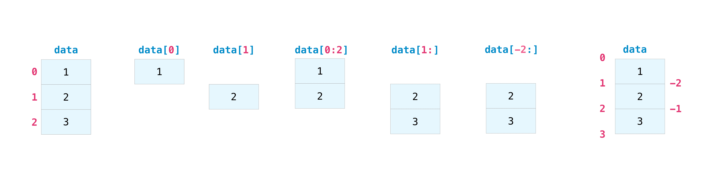
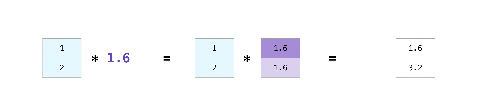
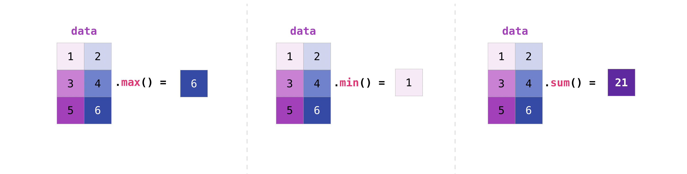
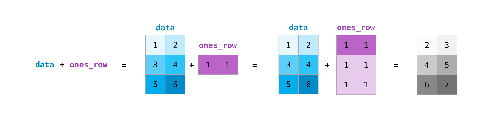
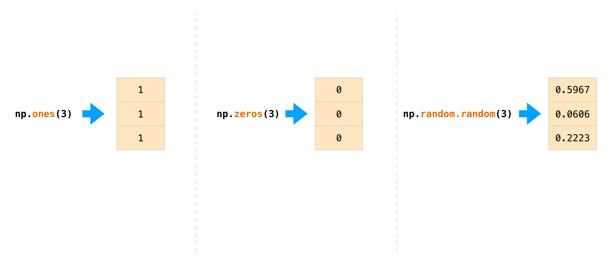
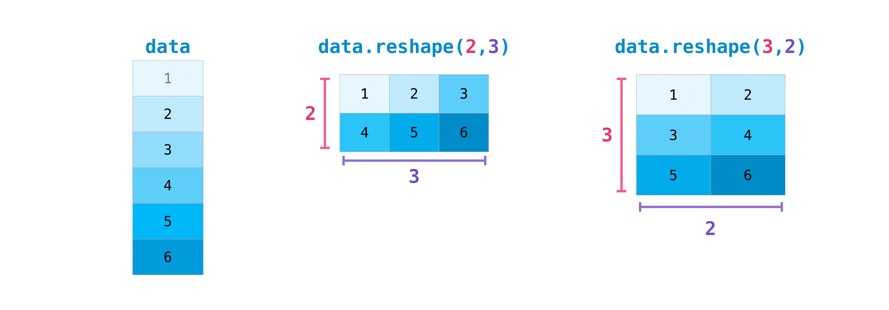
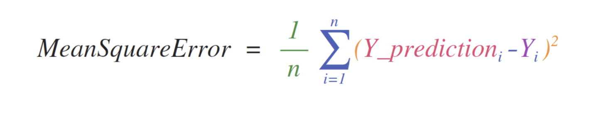
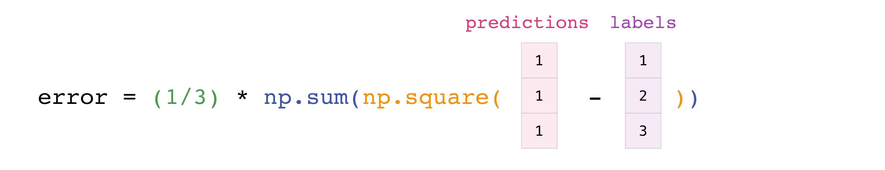
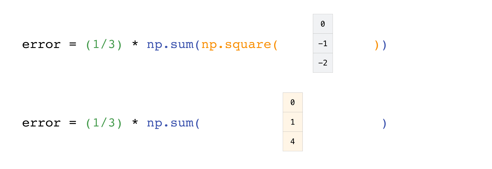
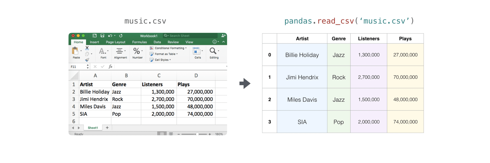

Welcome to NumPy!
NumPy (Numerical Python) — это библиотека Python с открытым исходным кодом, которая используется практически во всех областях науки и техники. Это универсальный стандарт работы с числовыми данными в Python, лежащий в основе научных экосистем Python и PyData. Среди пользователей NumPy есть все: от начинающих программистов до опытных исследователей, занимающихся современными научными и промышленными исследованиями и разработками. API NumPy широко используется в Pandas, SciPy, Matplotlib, scikit-learn, scikit-image и большинстве других пакетов Python для обработки данных и научных исследований.
Библиотека NumPy содержит структуры данных многомерных массивов и матриц (дополнительную информацию об этом вы найдете в следующих разделах). Он предоставляет ndarray, объекту однородного n-мерного массива, методы для эффективной работы с ним. NumPy можно использовать для выполнения самых разных математических операций с массивами. Он добавляет в Python мощные структуры данных, которые гарантируют эффективные вычисления с массивами и матрицами, а также предоставляет огромную библиотеку математических функций высокого уровня, которые работают с этими массивами и матрицами.
Installing NumPy
Для установки NumPy мы настоятельно рекомендуем использовать научный дистрибутив Python. Если вы ищете полные инструкции по установке NumPy в вашей операционной системе, см. раздел Установка NumPy.
Если у вас уже есть Python, вы можете установить NumPy с помощью:
or
Если у вас еще нет Python, возможно, вы захотите использовать Anaconda. Это самый простой способ начать. Преимущество этого дистрибутива заключается в том, что вам не нужно слишком беспокоиться об отдельной установке NumPy или любого из основных пакетов, которые вы будете использовать для анализа данных, таких как pandas, Scikit-Learn и т. д.
How to import NumPy
Чтобы получить доступ к NumPy и его функциям, импортируйте его в свой код Python следующим образом:
Мы сокращаем импортируемое имя до np для лучшей читаемости кода с помощью NumPy. Это широко распространенное соглашение, которое делает ваш код более читабельным для всех, кто над ним работает. Мы рекомендуем всегда использовать import numpy в качестве np.
Reading the example code
Если вам еще неудобно читать руководства, содержащие много кода, возможно, вы не знаете, как интерпретировать блок кода, который выглядит следующим образом:
>>> a2 = a[np.newaxis, :]
>>> a2.shape
(1, 6)
Если вы не знакомы с этим стилем, его очень легко понять. Если вы видите >>>, вы смотрите на ввод или код, который вы должны ввести. Все, перед чем нет >>>, является выводом или результатами запуска вашего кода. Это стиль, который вы видите, когда запускаете Python в командной строке, но если вы используете IPython, вы можете увидеть другой стиль. Обратите внимание, что он не является частью кода и вызовет ошибку, если его ввести или вставить в оболочку Python. Его можно безопасно ввести или вставить в оболочку IPython; >>> игнорируется.
В чем разница между списком Python и массивом NumPy?
NumPy предоставляет вам огромный набор быстрых и эффективных способов создания массивов и манипулирования числовыми данными внутри них. Хотя список Python может содержать разные типы данных в одном списке, все элементы массива NumPy должны быть однородными. Математические операции, которые должны выполняться над массивами, были бы крайне неэффективными, если бы массивы не были однородными.
Зачем использовать NumPy?
Массивы NumPy работают быстрее и компактнее, чем списки Python. Массив потребляет меньше памяти и удобен в использовании. NumPy использует гораздо меньше памяти для хранения данных и предоставляет механизм указания типов данных. Это позволяет еще больше оптимизировать код.
Что такое массив?
Массив — это центральная структура данных библиотеки NumPy. Массив представляет собой сетку значений и содержит информацию о необработанных данных, о том, как найти элемент и как его интерпретировать. Он имеет сетку элементов, которые можно индексировать различными способами. Все элементы имеют один и тот же тип, называемый dtype массива.
Массив может быть проиндексирован кортежем неотрицательных целых чисел, логическими значениями, другим массивом или целыми числами. Ранг массива — это количество измерений. Форма массива представляет собой кортеж целых чисел, задающих размер массива по каждому измерению.
Один из способов инициализации массивов NumPy — это использование списков Python с использованием вложенных списков для двумерных или многомерных данных.
Например:
Мы можем получить доступ к элементам массива, используя квадратные скобки. Когда вы получаете доступ к элементам, помните, что индексация в NumPy начинается с 0. Это означает, что если вы хотите получить доступ к первому элементу массива, вы будете обращаться к элементу «0».
[1 2 3 4]
Дополнительная информация о массивах
Этот раздел охватывает 1D array, 2D array, ndarray, vector, matrix
Иногда вы можете услышать, что массив называется «ndarray», что является сокращением от «N-мерный массив». N-мерный массив — это просто массив с любым количеством измерений. Вы также можете услышать 1-D или одномерный массив, 2-D или двумерный массив и так далее. Класс NumPy ndarray используется для представления как матриц, так и векторов. Вектор — это массив с одним измерением (нет разницы между векторами-строками и столбцами), а матрица — это массив с двумя измерениями. Для трехмерных и более размерных массивов также часто используется термин «тензор».
Каковы атрибуты массива?
Массив обычно представляет собой контейнер фиксированного размера, содержащий элементы одного типа и размера. Количество измерений и элементов в массиве определяется его формой. Форма массива представляет собой кортеж неотрицательных целых чисел, определяющих размеры каждого измерения.
В NumPy размеры называются осями. Это означает, что если у вас есть 2D-массив, который выглядит так:
[1., 1., 1.]]
Ваш массив имеет 2 оси. Первая ось имеет длину 2, а вторая ось имеет длину 3.
Как и в других объектах-контейнерах Python, к содержимому массива можно получить доступ и изменить его путем индексации или разрезания массива. В отличие от типичных объектов-контейнеров, разные массивы могут использовать одни и те же данные, поэтому изменения, внесенные в один массив, могут быть видны в другом.
Атрибуты массива отражают информацию, присущую самому массиву. Если вам нужно получить или даже установить свойства массива без создания нового массива, вы часто можете получить доступ к массиву через его атрибуты.
Как создать базовый массив
В этом разделе рассматриваются np.array(), np.zeros(), np.ones(), np.empty(), np.arange(), np.linspace(), dtype.
Чтобы создать массив NumPy, вы можете использовать функцию np.array().
Все, что вам нужно сделать, чтобы создать простой массив, — это передать ему список. При желании вы также можете указать тип данных в своем списке.
>>> a = np.array([1, 2, 3])
Вы можете визуализировать свой массив следующим образом:
Имейте в виду, что эти визуализации призваны упростить идеи и дать вам базовое понимание концепций и механики NumPy. Массивы и операции с массивами намного сложнее, чем описано здесь!
Помимо создания массива из последовательности элементов, вы можете легко создать массив, заполненный нулями:
array([0., 0.])
Или массив, заполненный единицами:
array([1., 1.])
Или даже пустой массив! Функция empty создает массив, начальное содержимое которого является случайным и зависит от состояния памяти. Причиной использования empty вместо zeros (или чего-то подобного) является скорость — просто не забудьте потом заполнить каждый элемент!
>>> np.empty(2)
array([3.14, 42. ]) # may vary
Вы можете создать массив с диапазоном элементов:
array([0, 1, 2, 3])
И даже массив, содержащий диапазон равномерно расположенных интервалов. Для этого вы укажете первое число, последнее число и размер шага.
array([2, 4, 6, 8])
Вы также можете использовать np.linspace() для создания массива со значениями, линейно расположенными в указанном интервале:
array([ 0. , 2.5, 5. , 7.5, 10. ])
Указание типа данных
Хотя тип данных по умолчанию — с плавающей запятой (np.float64), вы можете явно указать, какой тип данных вам нужен, используя ключевое слово dtype.
>>> x
array([1, 1])
Добавление, удаление и сортировка элементов
В этом разделе рассматриваются np.sort(), np.concatenate().
Сортировать элемент просто с помощью np.sort(). Вы можете указать ось, вид и порядок при вызове функции.
Если вы начнете с этого массива:
Вы можете быстро отсортировать числа в порядке возрастания с помощью:
array([1, 2, 3, 4, 5, 6, 7, 8])
В дополнение к сортировке, которая возвращает отсортированную копию массива, вы можете использовать:
- argsort, который представляет собой косвенную сортировку по указанной оси,
- lexsort, который представляет собой косвенную стабильную сортировку по нескольким ключам,
- searchsorted, который находит элементы в отсортированном массиве,
- partition, который является частичной сортировкой.
Если вы начнете с этих массивов:
>>> b = np.array([5, 6, 7, 8])
Вы можете объединить их с помощью np.concatenate().
array([1, 2, 3, 4, 5, 6, 7, 8])
Или, если вы начнете с этих массивов:
>>> y = np.array([[5, 6]])
Вы можете объединить их с помощью:
array([[1, 2],
[3, 4],
[5, 6]])
Чтобы удалить элементы из массива, достаточно просто использовать индексацию для выбора элементов, которые вы хотите сохранить.
Как узнать форму и размер массива?
В этом разделе рассматриваются ndarray.ndim, ndarray.size, ndarray.shape.
ndarray.ndim сообщит вам количество осей или измерений массива.
ndarray.size сообщит вам общее количество элементов массива. Это произведение элементов формы массива.
ndarray.shape отобразит кортеж целых чисел, указывающий количество элементов, хранящихся по каждому измерению массива. Если, например, у вас есть двумерный массив с 2 строками и 3 столбцами, форма вашего массива будет (2, 3).
Например, если вы создадите этот массив:
... [4, 5, 6, 7]],
...
... [[0, 1, 2, 3],
... [4, 5, 6, 7]],
...
... [[0 ,1 ,2, 3],
... [4, 5, 6, 7]]])
Чтобы узнать количество измерений массива, запустите:
3
Чтобы узнать общее количество элементов в массиве, выполните:
24
И чтобы найти форму вашего массива, запустите:
(3, 2, 4)
Можете ли вы изменить форму массива?
В этом разделе рассматривается arr.reshape().
Да!
Использование arr.reshape() придаст массиву новую форму без изменения данных. Просто помните, что когда вы используете метод reshape, массив, который вы хотите создать, должен иметь то же количество элементов, что и исходный массив. Если вы начинаете с массива из 12 элементов, вам необходимо убедиться, что ваш новый массив также содержит 12 элементов.
Если вы начнете с этого массива:
>>> print(a)
[0 1 2 3 4 5]
Вы можете использовать reshape(), чтобы изменить форму вашего массива. Например, вы можете преобразовать этот массив в массив с тремя строками и двумя столбцами:
>>> print(b)
[[0 1]
[2 3]
[4 5]]
С помощью np.reshape вы можете указать несколько дополнительных параметров:
array([[0, 1, 2, 3, 4, 5]])
a — массив, форму которого нужно изменить.
newshape — это новая форма, которую вы хотите. Вы можете указать целое число или кортеж целых чисел. Если вы укажете целое число, результатом будет массив такой длины. Форма должна соответствовать исходной форме.
order: C означает чтение/запись элементов с использованием порядка индексов, подобного C, F означает чтение/запись элементов, используя порядок индексов, подобный Фортрану, A означает чтение/запись элементов в порядке индексов, подобном Фортрану, если a - это Фортран смежные в памяти, в противном случае порядок C-подобный. (Это необязательный параметр, его не нужно указывать.)
По сути, порядок C и Fortran связан с тем, как индексы соответствуют порядку хранения массива в памяти. В Фортране при перемещении по элементам двумерного массива, хранящегося в памяти, первый индекс является наиболее быстро меняющимся индексом. Поскольку первый индекс перемещается к следующей строке по мере его изменения, матрица сохраняется по одному столбцу за раз. Вот почему Фортран считается языком с большим количеством столбцов. С другой стороны, в C последний индекс меняется быстрее всего. Матрица хранится по строкам, что делает ее языком с большим количеством строк. Что вы делаете для C или Fortran, зависит от того, важнее ли сохранить соглашение об индексировании или не переупорядочивать данные.
Как преобразовать 1D-массив в 2D-массив (как добавить в массив новую ось)
В этом разделе рассматриваются np.newaxis, np.expand_dims.
Вы можете использовать np.newaxis и np.expand_dims, чтобы увеличить размеры существующего массива.
Использование np.newaxis увеличит размеры вашего массива на одно измерение при однократном использовании. Это означает, что 1D-массив станет 2D-массивом, 2D-массив станет 3D-массивом и так далее.
Например, если вы начнете с этого массива:
>>> a.shape
(6,)
Вы можете использовать np.newaxis для добавления новой оси:
>>> a2.shape
(1, 6)
Вы можете явно преобразовать 1D-массив либо с вектором-строкой, либо с вектор-столбцом, используя np.newaxis. Например, вы можете преобразовать одномерный массив в вектор-строку, вставив ось вдоль первого измерения:
>>> row_vector = a[np.newaxis, :]
>>> row_vector.shape
(1, 6)
Или, для вектора-столбца, вы можете вставить ось вдоль второго измерения:
>>> col_vector.shape
(6, 1)
Вы также можете расширить массив, вставив новую ось в указанную позицию с помощью np.expand_dims. Например, если вы начнете с этого массива:
>>> a.shape
(6,)
Вы можете использовать np.expand_dims для добавления оси в позицию индекса 1 с помощью:
>>> b.shape
(6, 1)
Вы можете добавить ось в позиции индекса 0 с помощью:
>>> c.shape
(1, 6)
Индексирование и нарезка
Вы можете индексировать и нарезать массивы NumPy так же, как вы нарезаете списки Python.
>>> data[1]
2
>>> data[0:2]
array([1, 2])
>>> data[1:]
array([2, 3])
>>> data[-2:]
array([2, 3])
Вы можете представить это следующим образом:

Возможно, вы захотите взять часть вашего массива или отдельные элементы массива для использования в дальнейшем анализе или дополнительных операциях. Для этого вам нужно будет разбить, разрезать и/или проиндексировать ваши массивы.
Если вы хотите выбрать значения из массива, которые удовлетворяют определенным условиям, это легко сделать с помощью NumPy.
Например, если вы начнете с этого массива:
Вы можете легко распечатать все значения массива меньше 5.
[1 2 3 4]
Вы также можете выбрать, например, числа, равные или превышающие 5, и использовать это условие для индексации массива.
>>> print(a[five_up])
[ 5 6 7 8 9 10 11 12]
Вы можете выбрать элементы, которые делятся на 2:
>>> print(divisible_by_2)
[ 2 4 6 8 10 12]
Или вы можете выбрать элементы, удовлетворяющие двум условиям, используя & и | операторы:
>>> print(c)
[ 3 4 5 6 7 8 9 10]
Вы также можете использовать логические операторы & и | для возврата логических значений, определяющих, соответствуют ли значения в массиве определенному условию. Это может быть полезно с массивами, содержащими имена или другие категориальные значения.
>>> print(five_up)
[[False False False False]
[ True True True True]
[ True True True True]]
Вы также можете использовать np.nonzero() для выбора элементов или индексов из массива.
Начиная с этого массива:
Вы можете использовать np.nonzero() для печати индексов элементов, которые, например, меньше 5:
>>> print(b)
(array([0, 0, 0, 0]), array([0, 1, 2, 3]))
В этом примере был возвращен кортеж массивов: по одному на каждое измерение. Первый массив представляет индексы строк, в которых найдены эти значения, а второй массив представляет индексы столбцов, в которых найдены значения.
Если вы хотите создать список координат, в которых существуют элементы, вы можете заархивировать массивы, перебрать список координат и распечатать их. Например:
>>> for coord in list_of_coordinates:
... print(coord)
(0, 0)
(0, 1)
(0, 2)
(0, 3)
Вы также можете использовать np.nonzero() для печати элементов массива, число которых меньше 5, с помощью:
[1 2 3 4]
Если искомый элемент не существует в массиве, то возвращаемый массив индексов будет пустым. Например:
>>> print(not_there)
(array([], dtype=int64), array([], dtype=int64))
Как создать массив из существующих данных
В этом разделе рассматриваются нарезка и индексирование, np.vstack(), np.hstack(), np.hsplit(), .view(), copy().
Вы можете легко создать новый массив из части существующего массива. Допустим, у вас есть этот массив:
Вы можете создать новый массив из раздела вашего массива в любое время, указав, где вы хотите разрезать массив.
>>> arr1
array([4, 5, 6, 7, 8])
Здесь вы захватили часть вашего массива от позиции индекса 3 до позиции индекса 8.
Вы также можете сложить два существующих массива как по вертикали, так и по горизонтали. Допустим, у вас есть два массива: a1 и a2:
... [2, 2]])
>>> a2 = np.array([[3, 3],
... [4, 4]])
Вы можете сложить их вертикально с помощью vstack:
array([[1, 1],
[2, 2],
[3, 3],
[4, 4]])
Или сложите их горизонтально с помощью hstack:
array([[1, 1, 3, 3],
[2, 2, 4, 4]])
Вы можете разделить массив на несколько меньших массивов, используя hsplit. Вы можете указать либо количество возвращаемых массивов одинаковой формы, либо столбцы, после которых должно произойти деление.
Допустим, у вас есть этот массив:
>>> x
array([[ 1, 2, 3, 4, 5, 6, 7, 8, 9, 10, 11, 12],
[13, 14, 15, 16, 17, 18, 19, 20, 21, 22, 23, 24]])
Если вы хотите разделить этот массив на три массива одинаковой формы, вы должны запустить:
[array([[ 1, 2, 3, 4],
[13, 14, 15, 16]]), array([[ 5, 6, 7, 8],
[17, 18, 19, 20]]), array([[ 9, 10, 11, 12],
[21, 22, 23, 24]])]
Если вы хотите разделить массив после третьего и четвертого столбца, вы должны выполнить:
[array([[ 1, 2, 3],
[13, 14, 15]]), array([[ 4],
[16]]), array([[ 5, 6, 7, 8, 9, 10, 11, 12],
[17, 18, 19, 20, 21, 22, 23, 24]])]
Вы можете использовать метод view для создания нового объекта массива, который просматривает те же данные, что и исходный массив (неглубокая копия).
Представления — важная концепция NumPy! Функции NumPy, а также такие операции, как индексирование и нарезка, будут возвращать представления, когда это возможно. Это экономит память и работает быстрее (не требуется копировать данные). Однако важно помнить об этом: изменение данных в представлении также изменяет исходный массив!
Допустим, вы создаете этот массив:
Теперь мы создаем массив b1, разрезая a и изменяя первый элемент b1. Это также изменит соответствующий элемент!
>>> b1
array([1, 2, 3, 4])
>>> b1[0] = 99
>>> b1
array([99, 2, 3, 4])
>>> a
array([[99, 2, 3, 4],
[ 5, 6, 7, 8],
[ 9, 10, 11, 12]])
Использование метода копирования создаст полную копию массива и его данных (глубокую копию). Чтобы использовать это в своем массиве, вы можете запустить:
Основные операции с массивами
В этом разделе рассматриваются сложение, вычитание, умножение, деление и многое другое.
После того как вы создали массивы, вы можете начать с ними работать. Допустим, например, что вы создали два массива: один называется "data", а другой — "ones".

Вы можете складывать массивы вместе со знаком плюс.
>>> ones = np.ones(2, dtype=int)
>>> data + ones
array([2, 3])
Конечно, вы можете сделать больше, чем просто сложение!
array([0, 1])
>>> data * data
array([1, 4])
>>> data / data
array([1., 1.])

Основные операции с NumPy просты. Если вы хотите найти сумму элементов массива, вам следует использовать sum(). Это работает для 1D-массивов, 2D-массивов и массивов более высоких измерений.
>>> a.sum()
10
Чтобы добавить строки или столбцы в двумерный массив, вам нужно указать ось.
Если вы начнете с этого массива:
Вы можете суммировать по оси строк с помощью:
array([3, 3])
Вы можете суммировать по оси столбцов с помощью:
array([2, 4])
Вещание
Бывают случаи, когда вам может потребоваться выполнить операцию между массивом и одним числом (также называемую операцией между вектором и скаляром) или между массивами двух разных размеров. Например, ваш массив (назовем его "data") может содержать информацию о расстоянии в милях, но вы хотите преобразовать эту информацию в километры. Вы можете выполнить эту операцию с помощью:
>>> data * 1.6
array([1.6, 3.2])

NumPy понимает, что умножение должно происходить с каждой ячейкой. Эта концепция называется вещанием. Вещание — это механизм, позволяющий NumPy выполнять операции с массивами различной формы. Размеры вашего массива должны быть совместимыми, например, когда размеры обоих массивов равны или когда один из них равен 1. Если размеры несовместимы, вы получите ValueError.
Более полезные операции с массивами
В этом разделе описаны максимум, минимум, сумма, среднее значение, произведение, стандартное отклонение и многое другое.
NumPy также выполняет функции агрегирования. В дополнение к min, max и sum вы можете легко запустить mean значение, чтобы получить среднее значение, prod, чтобы получить результат умножения элементов вместе, std, чтобы получить стандартное отклонение, и многое другое.
2.0
>>> data.min()
1.0
>>> data.sum()
3.0

Начнем с этого массива под названием «a».
... [0.54627315, 0.05093587, 0.40067661, 0.55645993],
... [0.12697628, 0.82485143, 0.26590556, 0.56917101]])
Очень часто требуется агрегировать данные по строке или столбцу. По умолчанию каждая функция агрегации NumPy возвращает совокупную величину всего массива. Чтобы найти сумму или минимум элементов вашего массива, запустите:
4.8595784
Или:
0.05093587
Вы можете указать, по какой оси вы хотите вычислять функцию агрегирования. Например, вы можете найти минимальное значение в каждом столбце, указав axis=0.
array([0.12697628, 0.05093587, 0.26590556, 0.5510652 ])
Четыре значения, перечисленные выше, соответствуют количеству столбцов в вашем массиве. Используя массив из четырех столбцов, вы получите в результате четыре значения.
Создание матриц
Вы можете передать списки списков Python для создания двумерного массива (или «матрицы») для их представления в NumPy.
>>> data
array([[1, 2],
[3, 4],
[5, 6]])
Операции индексирования и разрезания полезны при работе с матрицами:
2
>>> data[1:3]
array([[3, 4],
[5, 6]])
>>> data[0:2, 0]
array([1, 3])

Вы можете агрегировать матрицы так же, как и векторы:
6
>>> data.min()
1
>>> data.sum()
21

Вы можете агрегировать все значения в матрице, а также агрегировать их по столбцам или строкам, используя параметр оси. Чтобы проиллюстрировать этот момент, давайте посмотрим на слегка измененный набор данных:
>>> data
array([[1, 2],
[5, 3],
[4, 6]])
>>> data.max(axis=0)
array([5, 6])
>>> data.max(axis=1)
array([2, 5, 6])

Создав матрицы, вы можете складывать и умножать их с помощью арифметических операторов, если у вас есть две матрицы одинакового размера.
>>> ones = np.array([[1, 1], [1, 1]])
>>> data + ones
array([[2, 3],
[4, 5]])
Вы можете выполнять эти арифметические операции над матрицами разных размеров, но только если одна матрица имеет только один столбец или одну строку. В этом случае NumPy будет использовать для этой операции свои правила трансляции.
>>> ones_row = np.array([[1, 1]])
>>> data + ones_row
array([[2, 3],
[4, 5],
[6, 7]])

Имейте в виду, что когда NumPy печатает N-мерные массивы, последняя ось обрабатывается быстрее всего, а первая ось — самая медленная. Например:
array([[[1., 1.],
[1., 1.],
[1., 1.]],
[[1., 1.],
[1., 1.],
[1., 1.]],
[[1., 1.],
[1., 1.],
[1., 1.]],
[[1., 1.],
[1., 1.],
[1., 1.]]])
Часто бывают случаи, когда мы хотим, чтобы NumPy инициализировал значения массива. Для этого NumPy предлагает такие функции, как Ones() и Zeros(), а также класс random.Generator для генерации случайных чисел. Все, что вам нужно сделать, это передать количество элементов, которые вы хотите сгенерировать:
array([1., 1., 1.])
>>> np.zeros(3)
array([0., 0., 0.])
>>> rng = np.random.default_rng() # the simplest way to generate random numbers
>>> rng.random(3)
array([0.63696169, 0.26978671, 0.04097352])

Вы также можете использовать Ones(), Zeros() и Random() для создания двумерного массива, если вы дадите им кортеж, описывающий размеры матрицы:
array([[1., 1.],
[1., 1.],
[1., 1.]])
>>> np.zeros((3, 2))
array([[0., 0.],
[0., 0.],
[0., 0.]])
>>> rng.random((3, 2))
array([[0.01652764, 0.81327024],
[0.91275558, 0.60663578],
[0.72949656, 0.54362499]]) # may vary

Генерация случайных чисел
Использование генерации случайных чисел является важной частью настройки и оценки многих алгоритмов численного и машинного обучения. Если вам нужно случайным образом инициализировать веса в искусственной нейронной сети, разделить данные на случайные наборы или случайно перетасовать набор данных, возможность генерировать случайные числа (на самом деле, повторяемые псевдослучайные числа) имеет важное значение.
С помощью Generator.integers вы можете генерировать случайные целые числа от низкого (помните, что это включается в NumPy) до высокого (исключительного). Вы можете установить endpoint=True, чтобы сделать большее число включенным.
Вы можете сгенерировать массив случайных целых чисел 2 x 4 от 0 до 4 с помощью:
array([[2, 1, 1, 0],
[0, 0, 0, 4]]) # may vary
Как получить уникальные предметы и счетчики
В этом разделе рассматривается np.unique().
Вы можете легко найти уникальные элементы в массиве с помощью np.unique.
Например, если вы начнете с этого массива:
вы можете использовать np.unique для печати уникальных значений в вашем массиве:
>>> print(unique_values)
[11 12 13 14 15 16 17 18 19 20]
Чтобы получить индексы уникальных значений в массиве NumPy (массив первых позиций индексов уникальных значений в массиве), просто передайте аргумент return_index в np.unique(), а также свой массив.
>>> print(indices_list)
[ 0 2 3 4 5 6 7 12 13 14]
Вы можете передать аргумент return_counts в np.unique() вместе с вашим массивом, чтобы получить частоту появления уникальных значений в массиве NumPy.
>>> print(occurrence_count)
[3 2 2 2 1 1 1 1 1 1]
Это также работает с 2D-массивами! Если вы начнете с этого массива:
Вы можете найти уникальные значения с помощью:
>>> print(unique_values)
[ 1 2 3 4 5 6 7 8 9 10 11 12]
Если аргумент оси не передан, ваш 2D-массив будет сглажен.
Если вы хотите получить уникальные строки или столбцы, обязательно передайте аргумент оси. Чтобы найти уникальные строки, укажите ось=0, а для столбцов укажите ось=1.
>>> print(unique_rows)
[[ 1 2 3 4]
[ 5 6 7 8]
[ 9 10 11 12]]
Чтобы получить уникальные строки, позицию индекса и количество вхождений, вы можете использовать:
... a_2d, axis=0, return_counts=True, return_index=True)
>>> print(unique_rows)
[[ 1 2 3 4]
[ 5 6 7 8]
[ 9 10 11 12]]
>>> print(indices)
[0 1 2]
>>> print(occurrence_count)
[2 1 1]
Транспонирование и изменение формы матрицы
В этом разделе рассматриваются arr.reshape(), arr.transpose(), arr.T.
Часто возникает необходимость транспонировать матрицы. Массивы NumPy имеют свойство T, которое позволяет транспонировать матрицу.
Вам также может потребоваться переключить размеры матрицы. Это может произойти, например, если у вас есть модель, которая ожидает определенную входную форму, отличную от вашего набора данных. Вот тут-то и может оказаться полезным метод reshape. Вам просто нужно передать новые размеры матрицы, которые вы хотите.
array([[1, 2, 3],
[4, 5, 6]])
>>> data.reshape(3, 2)
array([[1, 2],
[3, 4],
[5, 6]])

Вы также можете использовать .transpose() для изменения направления или изменения осей массива в соответствии с указанными вами значениями.
Если вы начнете с этого массива:
>>> arr
array([[0, 1, 2],
[3, 4, 5]])
Вы можете транспонировать свой массив с помощью arr.transpose().
array([[0, 3],
[1, 4],
[2, 5]])
Вы также можете использовать arr.T:
array([[0, 3],
[1, 4],
[2, 5]])
Как перевернуть массив
В этом разделе рассматривается np.flip().
Функция np.flip() в NumPy позволяет переворачивать или переворачивать содержимое массива вдоль оси. При использовании np.flip() укажите массив, который вы хотите перевернуть, и ось. Если вы не укажете ось, NumPy перевернет содержимое по всем осям вашего входного массива.
Reversing a 1D array
Если вы начнете с такого 1D-массива:
Вы можете развернуть это с помощью:
Если вы хотите распечатать обратный массив, вы можете запустить:
Reversed Array: [8 7 6 5 4 3 2 1]
Reversing a 2D array
2D-массив работает примерно так же.
Если вы начнете с этого массива:
Вы можете перевернуть содержимое во всех строках и всех столбцах с помощью:
>>> print(reversed_arr)
[[12 11 10 9]
[ 8 7 6 5]
[ 4 3 2 1]]
Вы можете легко перевернуть только строки с помощью:
>>> print(reversed_arr_rows)
[[ 9 10 11 12]
[ 5 6 7 8]
[ 1 2 3 4]]
Или поменяйте местами только столбцы с помощью:
>>> print(reversed_arr_columns)
[[ 4 3 2 1]
[ 8 7 6 5]
[12 11 10 9]]
Вы также можете перевернуть содержимое только одного столбца или строки. Например, вы можете перевернуть содержимое строки с индексом 1 (вторая строка):
>>> print(arr_2d)
[[ 1 2 3 4]
[ 8 7 6 5]
[ 9 10 11 12]]
Вы также можете перевернуть столбец в позиции индекса 1 (второй столбец):
>>> print(arr_2d)
[[ 1 10 3 4]
[ 8 7 6 5]
[ 9 2 11 12]]
Изменение формы и выравнивание многомерных массивов
В этом разделе рассматриваются .flatten(), ravel().
Существует два популярных способа выравнивания массива: .flatten() и .ravel(). Основное различие между ними заключается в том, что новый массив, созданный с помощью ravel(), на самом деле является ссылкой на родительский массив (т. е. «представление»). Это означает, что любые изменения в новом массиве также повлияют на родительский массив. Поскольку ravel не создает копии, он эффективно использует память.
Если вы начнете с этого массива:
Вы можете использовать Flatten, чтобы преобразовать массив в одномерный массив.
array([ 1, 2, 3, 4, 5, 6, 7, 8, 9, 10, 11, 12])
Когда вы используете Flatten, изменения в вашем новом массиве не изменят родительский массив.
Например:
>>> a1[0] = 99
>>> print(x) # Original array
[[ 1 2 3 4]
[ 5 6 7 8]
[ 9 10 11 12]]
>>> print(a1) # New array
[99 2 3 4 5 6 7 8 9 10 11 12]
Но когда вы используете ravel, изменения, которые вы вносите в новый массив, повлияют на родительский массив.
Например:
>>> a2[0] = 98
>>> print(x) # Original array
[[98 2 3 4]
[ 5 6 7 8]
[ 9 10 11 12]]
>>> print(a2) # New array
[98 2 3 4 5 6 7 8 9 10 11 12]
Как получить доступ к строке документации для получения дополнительной информации
В этом разделе рассматриваются help(), ?, ??
Когда дело доходит до экосистемы науки о данных, Python и NumPy созданы с учетом потребностей пользователя. Одним из лучших примеров этого является встроенный доступ к документации. Каждый объект содержит ссылку на строку, которая называется строкой документации. В большинстве случаев эта строка документации содержит краткое и краткое описание объекта и способов его использования. В Python есть встроенная функция help(), которая поможет вам получить доступ к этой информации. Это означает, что практически в любое время, когда вам понадобится дополнительная информация, вы можете использовать help(), чтобы быстро найти нужную информацию.
Например:
Help on built-in function max in module builtins:
max(...)
max(iterable, *[, default=obj, key=func]) -> value
max(arg1, arg2, *args, *[, key=func]) -> value
With a single iterable argument, return its biggest item. The
default keyword-only argument specifies an object to return if
the provided iterable is empty.
With two or more arguments, return the largest argument.
Поскольку доступ к дополнительной информации очень полезен, IPython использует оператор ? символ как сокращение для доступа к этой документации вместе с другой соответствующей информацией.
Например:
max(iterable, *[, default=obj, key=func]) -> value
max(arg1, arg2, *args, *[, key=func]) -> value
With a single iterable argument, return its biggest item. The
default keyword-only argument specifies an object to return if
the provided iterable is empty.
With two or more arguments, return the largest argument.
Type: builtin_function_or_method
Вы даже можете использовать эту запись для методов объекта и самих объектов.
Допустим, вы создаете этот массив:
Тогда вы сможете получить много полезной информации (сначала подробности о самом объекте, а затем строку документации ndarray, экземпляром которого является объект):
In [0]: a?
Type: ndarray
String form: [1 2 3 4 5 6]
Length: 6
File: ~/anaconda3/lib/python3.9/site-packages/numpy/__init__.py
Docstring:
Class docstring:
ndarray(shape, dtype=float, buffer=None, offset=0,
strides=None, order=None)
An array object represents a multidimensional, homogeneous array
of fixed-size items. An associated data-type object describes the
format of each element in the array (its byte-order, how many bytes it
occupies in memory, whether it is an integer, a floating point number,
or something else, etc.)
Arrays should be constructed using `array`, `zeros` or `empty` (refer
to the See Also section below). The parameters given here refer to
a low-level method (`ndarray(...)`) for instantiating an array.
For more information, refer to the `numpy` module and examine the
methods and attributes of an array.
Parameters
----------
(for the __new__ method; see Notes below)
shape : tuple of ints
Shape of created array.
...
Это также работает для функций и других объектов, которые вы создаете. Просто не забудьте включить строку документации в свою функцию, используя строковый литерал ( """ """ или ''' ''' вокруг вашей документации).
Например, если вы создадите эту функцию:
... '''Return a * 2'''
... return a * 2
Получить информацию о функции можно:
In [2]: double?
Signature: double(a)
Docstring: Return a * 2
File: ~/Desktop/
Type: function
Выйти на другой уровень информации можно, прочитав исходный код интересующего вас объекта. Использование двойного вопросительного знака (??) позволяет получить доступ к исходному коду.
Например:
Signature: double(a)
Source:
def double(a):
'''Return a * 2'''
return a * 2
File: ~/Desktop/
Type: function
Если рассматриваемый объект скомпилирован на языке, отличном от Python, с использованием ?? вернет ту же информацию, что и ?. Вы найдете это во многих встроенных объектах и типах, например:
Signature: len(obj, /)
Docstring: Return the number of items in a container.
Type: builtin_function_or_method
и :
Signature: len(obj, /)
Docstring: Return the number of items in a container.
Type: builtin_function_or_method
имеют одинаковый вывод, поскольку они были скомпилированы на языке программирования, отличном от Python.
Работа с математическими формулами
Простота реализации математических формул, работающих с массивами, — это одна из причин, благодаря которой NumPy так широко используется в научном сообществе Python.
Например, это формула среднеквадратической ошибки (основная формула, используемая в моделях машинного обучения с учителем, которые имеют дело с регрессией):

Реализация этой формулы в NumPy проста и понятна:
error = (1/n) * np.sum(np.square (predictions - labels))
Что делает эту работу настолько хорошей, так это то, что predictions и labels могут содержать одно или тысячу значений. Они должны быть только одного размера.
Вы можете представить это следующим образом:

В этом примере и векторы предсказаний, и векторы меток содержат три значения, что означает, что n имеет значение три. После выполнения вычитаний значения вектора возводятся в квадрат. Затем NumPy суммирует значения, и вашим результатом будет значение ошибки для этого прогноза и оценка качества модели.


Как сохранять и загружать объекты NumPy
В этом разделе рассматриваются np.save, np.savez, np.savetxt, np.load, np.loadtxt.
В какой-то момент вам захочется сохранить массивы на диск и загрузить их обратно без необходимости повторного запуска кода. К счастью, есть несколько способов сохранять и загружать объекты с помощью NumPy. Объекты ndarray можно сохранять и загружать из дисковых файлов с помощью функций loadtxt и savetxt, которые обрабатывают обычные текстовые файлы, функций load и save, которые обрабатывают двоичные файлы NumPy с расширением .npy, а также функции savez, которая обрабатывает файлы NumPy с расширением .npy. Расширение файла .npz.
В файлах .npy и .npz хранятся данные, форма, dtype и другая информация, необходимая для восстановления ndarray таким образом, чтобы обеспечить правильное извлечение массива, даже если файл находится на другом компьютере с другой архитектурой.
Если вы хотите сохранить один объект ndarray, сохраните его как файл .npy, используя np.save. Если вы хотите сохранить более одного объекта ndarray в одном файле, сохраните его как файл .npz с помощью np.savez. Вы также можете сохранить несколько массивов в один файл в сжатом формате npz с помощью savez_compressed.
Сохранять и загружать массивы с помощью np.save() легко. Просто обязательно укажите массив, который вы хотите сохранить, и имя файла. Например, если вы создадите этот массив:
Вы можете сохранить его как «filename.npy» с помощью:
Вы можете использовать np.load() для восстановления массива.
Если вы хотите проверить свой массив, вы можете запустить:
[1 2 3 4 5 6]
Вы можете сохранить массив NumPy в виде обычного текстового файла, например файла .csv или .txt, с помощью np.savext.
Например, если вы создадите этот массив:
Вы можете легко сохранить его как файл .csv с именем «new_file.csv» следующим образом:
Вы можете быстро и легко загрузить сохраненный текстовый файл с помощью loadtxt():
array([1., 2., 3., 4., 5., 6., 7., 8.])
Функции savetxt() и loadtxt() принимают дополнительные необязательные параметры, такие как заголовок, нижний колонтитул и разделитель. Хотя текстовыми файлами проще делиться, файлы .npy и .npz меньше по размеру и быстрее читаются. Если вам нужна более сложная обработка вашего текстового файла (например, если вам нужно работать со строками, содержащими пропущенные значения), вам следует использовать функцию genfromtxt.
С помощью savetxt вы можете указать верхние и нижние колонтитулы, комментарии и многое другое.
Импорт и экспорт CSV
CSV-файл, содержащий существующую информацию, легко читать. Лучший и простой способ сделать это — использовать Pandas.
>>> # If all of your columns are the same type:
>>> x = pd.read_csv('music.csv', header=0).values
>>> print(x)
[['Billie Holiday' 'Jazz' 1300000 27000000]
['Jimmie Hendrix' 'Rock' 2700000 70000000]
['Miles Davis' 'Jazz' 1500000 48000000]
['SIA' 'Pop' 2000000 74000000]]
>>> # You can also simply select the columns you need:
>>> x = pd.read_csv('music.csv', usecols=['Artist', 'Plays']).values
>>> print(x)
[['Billie Holiday' 27000000]
['Jimmie Hendrix' 70000000]
['Miles Davis' 48000000]
['SIA' 74000000]]

Использовать Pandas для экспорта массива также просто. Если вы новичок в NumPy, возможно, вы захотите создать фрейм данных Pandas из значений в вашем массиве, а затем записать фрейм данных в CSV-файл с помощью Pandas.
Если вы создали этот массив «a»
... [ 0.99027828, 1.17150989, 0.94125714, -0.14692469],
... [ 0.76989341, 0.81299683, -0.95068423, 0.11769564],
... [ 0.20484034, 0.34784527, 1.96979195, 0.51992837]])
Вы можете создать фрейм данных Pandas
>>> print(df)
0 1 2 3
0 -2.582892 0.430148 -1.240820 1.595726
1 0.990278 1.171510 0.941257 -0.146925
2 0.769893 0.812997 -0.950684 0.117696
3 0.204840 0.347845 1.969792 0.519928
Вы можете легко сохранить свой фрейм данных с помощью:
И прочитайте свой CSV с помощью:

Вы также можете сохранить массив с помощью метода savetxt NumPy.
Если вы используете командную строку, вы можете прочитать сохраненный CSV-файл в любое время с помощью такой команды, как:
# 1, 2, 3, 4
-2.58,0.43,-1.24,1.60
0.99,1.17,0.94,-0.15
0.77,0.81,-0.95,0.12
0.20,0.35,1.97,0.52
Или вы можете открыть файл в любое время с помощью текстового редактора!